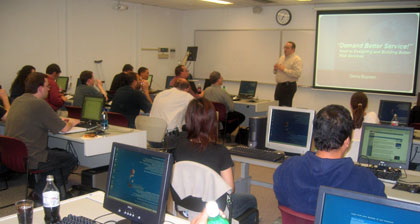

|
 |
 |
|
 |
 |
04/11/2006
Denny Boynton from Anheuser Busch provided an overview of Web Services, how
they work, and best practice design patterns and anti-patterns.

CONTENTS OF THE ZIP FILE
As part of this package, you're receiving the original Visual Studio 2005
solution files and the project source code and resources for the following
projects:
MoviesOnDemandWS (the web service project)
MoviesOnDemandWeb (the web client that consumes the service)
MoviesOnDemandSC (the rich, or "Smart" client that consumes the service)
I did not include the database project in this package as it was setup primarily
for the local SQL Server instance running on my laptop computer.
However, I did include two SQL Server scripts:
MoviesOnDemandDB2K.sql (the DDL script for SQL Server 2000)
MoviesOnDemandDB2K5.sql (the DDL script for SQL Server 2005)
Thus, choose the script appropriate to the database environment in which you're
going to work with the sample application.
Finally, the step-by-step script that I used during the demo has been included
so you can work on seeing first-hand how flexible the Document Processor
implementation can be.
Have fun.
Denny
|
 |
 |